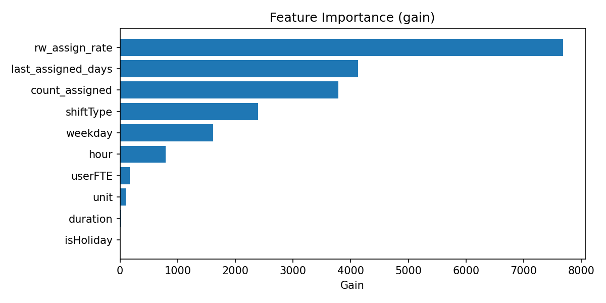
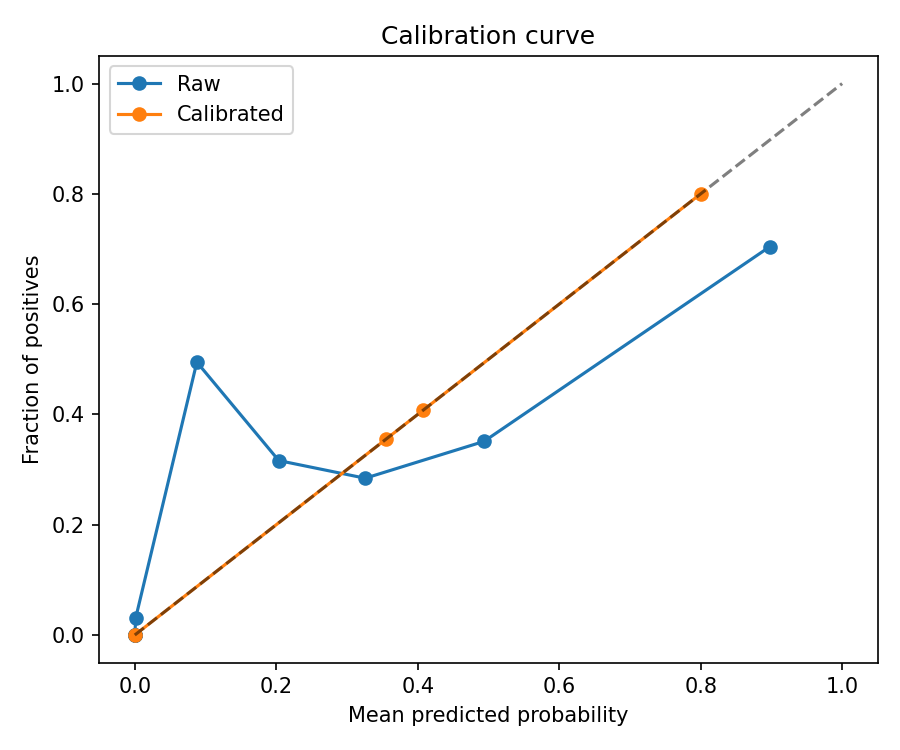
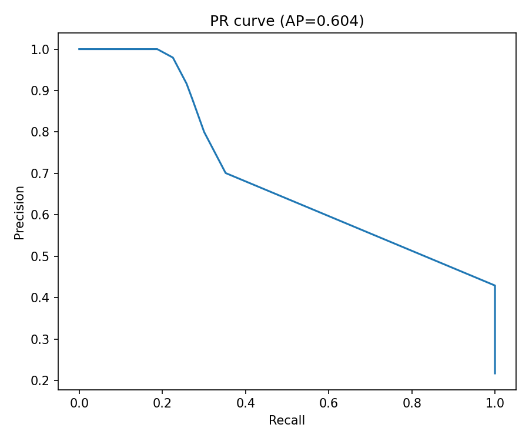
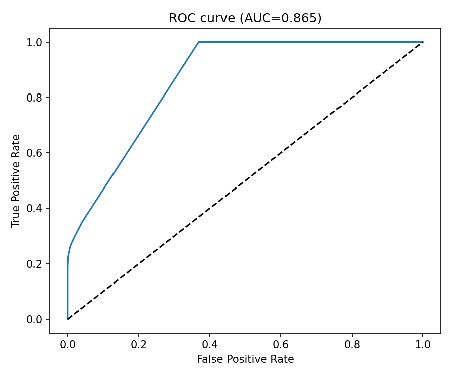
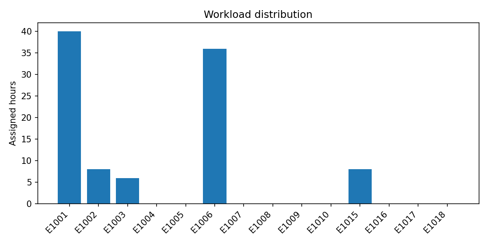

Shift Planner ML – Report
Run Summary
- Total shifts (target): 523
- Assigned shifts: 523
- Unassigned shifts: 0
- Users with assignments: 26
Assignment report JSON: assignment_report.json
Model Diagnostics
Feature Importance (gain)

Calibration curve

Precision–Recall

ROC

Plan Insights
Workload distribution (hours per user)

Top‑k leaderboards (sampled shifts)
Top‑k: topk_111062265

Top‑k: topk_111062266

Top‑k: topk_111062267

Top‑k: topk_111062268

Top‑k: topk_111062269

Top‑k: topk_111062270